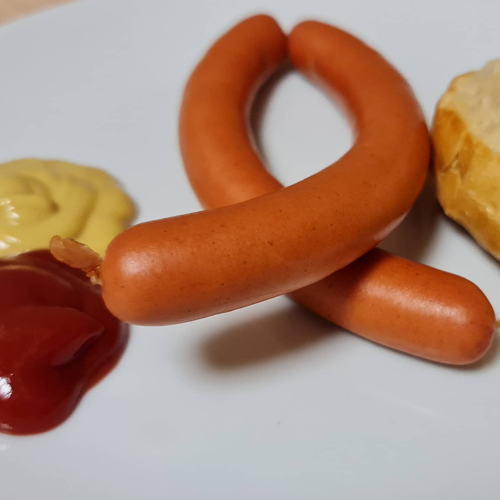

Jemné párky podľa @pernareckeuzeniny — Normy Jedál
Den začíná snídaní a není nad to jednou za čas zařadit párečky. My dnes měli jemné párky vlastní výroby s čerstvě upečenou houskou a byla to pecka. A mimochodem takový jemný párek s bramborovou kaší... řekněte kdo to jako dítě nemiloval 😇
#Snidane #Parky #JemneParky #PernareckeMasoUzeniny #VarimeDoma #Inspirace #VarimProRodinu